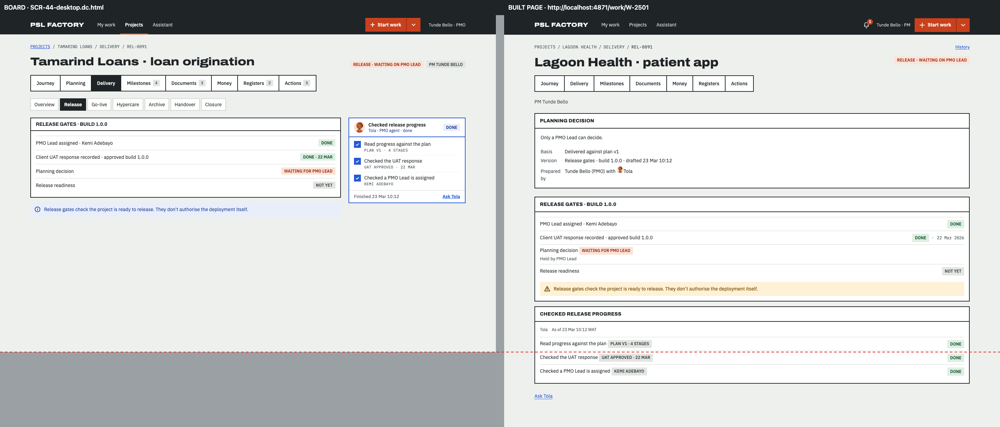
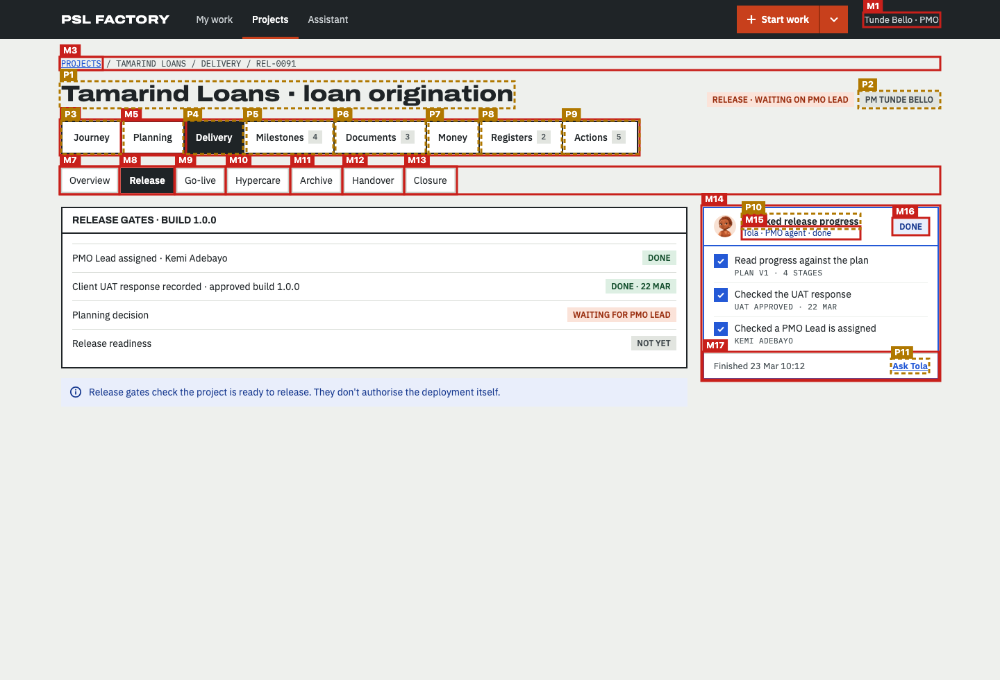
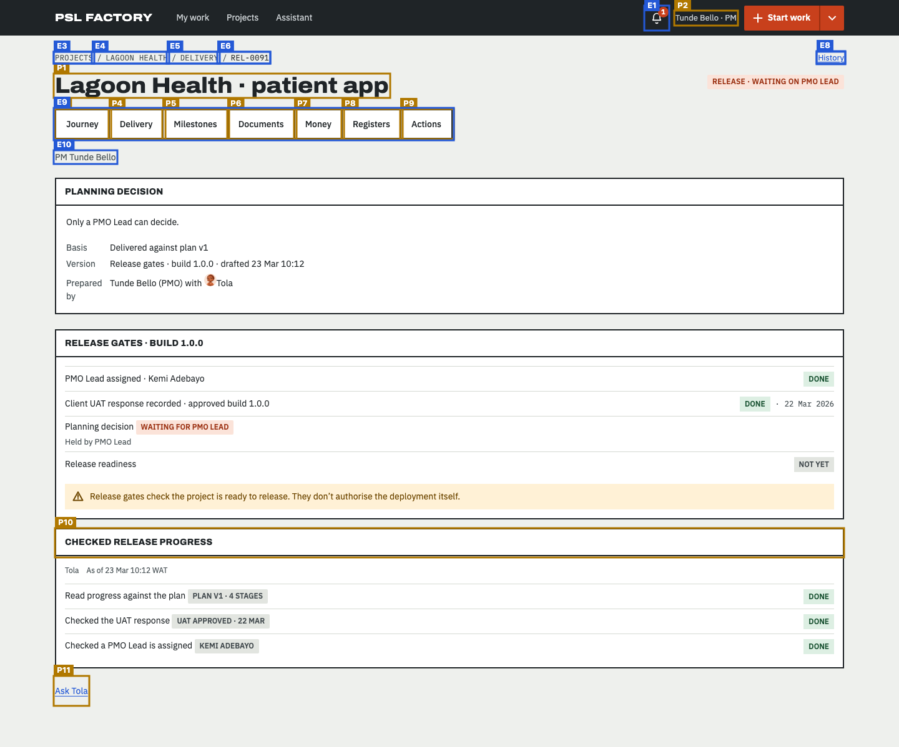
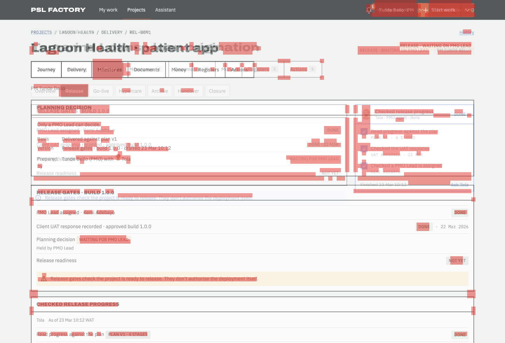

Does the built page follow the design?
Board SCR-44-desktop.dc.html compared with http://localhost:4871/work/W-2501 at 1440px wide · 2026-11-18T01:35:06.018Z
- Every board item is on the page or approved as an exception (100%).
- Visual match 84.9 is below 90.
- 11 item(s) are in a different place; review them (not part of the pass rule unless --strict-position).
22 of 39 things drawn on the board were found on the page: headings, buttons, links, search and filter controls, table columns, labels and the repeated rows (counted once, not per row).
How closely the shapes line up: blocks, bars, tables and text areas, compared in 12px squares over the top 980px. Different words in the same place still count as a match, so sample data does not lower the score.
Missing from the built page 17
Drawn on the board but not found on the page. Each one must be built, or approved as an exception.
| # | What | Text on the board | Where on the board | Exception |
|---|---|---|---|---|
| M1 | Text | Tunde Bello · PMO | right, 20px down | approved Conflicts 13: Top bar and signed-in name: the mock has no PMO Lead persona, so the board is served to pm; Overview and Setup are not in the pm persona's destinations. · builder proposal, pending design engineer |
| M2 | Text | PROJECTS / TAMARIND LOANS / DELIVERY / REL-0091 | middle, 84px down | approved Conflicts 13: The crumb is the shared Breadcrumb or the workspace crumb list; it has no DELIVERY segment on the project page and Tamarind Loans is Lagoon Health in the sample data (Conflicts 14). · builder proposal, pending design engineer |
| M3 | Link | PROJECTS | left, 84px down | approved Conflicts 13: The workspace crumbs are plain items, not links (F-30 frame); no link in the crumb line. · builder proposal, pending design engineer |
| M4 | Tabs | Project | left, 174px down | approved Conflicts 8: The line tab bar is drawn by the work item frame (F-30); none is current. · builder proposal, pending design engineer |
| M5 | Tab | Planning | left, 176px down | approved Conflicts 8: The Planning tab belongs to SCR-42 and F-31; it is not built here. · builder proposal, pending design engineer |
| M6 | Tabs | Delivery lines | middle, 242px down | approved Conflicts 5: the sub-nav is built only on the Delivery tab at 1440 as links and plain labels; rows without a work_id are not links (D-104), and the work item and phone boards draw no sub-nav. · builder proposal, pending design engineer |
| M7 | Tab | Overview | left, 242px down | approved Conflicts 5: the sub-nav is built only on the Delivery tab at 1440 as links and plain labels; rows without a work_id are not links (D-104), and the work item and phone boards draw no sub-nav. · builder proposal, pending design engineer |
| M8 | Tab | Release | left, 242px down | approved Conflicts 5: the sub-nav is built only on the Delivery tab at 1440 as links and plain labels; rows without a work_id are not links (D-104), and the work item and phone boards draw no sub-nav. · builder proposal, pending design engineer |
| M9 | Tab | Go-live | left, 242px down | approved Conflicts 5: the sub-nav is built only on the Delivery tab at 1440 as links and plain labels; rows without a work_id are not links (D-104), and the work item and phone boards draw no sub-nav. · builder proposal, pending design engineer |
| M10 | Tab | Hypercare | left, 242px down | approved Conflicts 5: the sub-nav is built only on the Delivery tab at 1440 as links and plain labels; rows without a work_id are not links (D-104), and the work item and phone boards draw no sub-nav. · builder proposal, pending design engineer |
| M11 | Tab | Archive | left, 242px down | approved Conflicts 5: the sub-nav is built only on the Delivery tab at 1440 as links and plain labels; rows without a work_id are not links (D-104), and the work item and phone boards draw no sub-nav. · builder proposal, pending design engineer |
| M12 | Tab | Handover | middle, 242px down | approved Conflicts 5: the sub-nav is built only on the Delivery tab at 1440 as links and plain labels; rows without a work_id are not links (D-104), and the work item and phone boards draw no sub-nav. · builder proposal, pending design engineer |
| M13 | Tab | Closure | middle, 242px down | approved Conflicts 5: the sub-nav is built only on the Delivery tab at 1440 as links and plain labels; rows without a work_id are not links (D-104), and the work item and phone boards draw no sub-nav. · builder proposal, pending design engineer |
| M14 | Side panel | (side panel) | right, 298px down | approved Conflicts 9: Tola's checks are a checklist section in the main column (Conflicts 9), not a side panel. · builder proposal, pending design engineer |
| M15 | Text | Tola · PMO agent · done | right, 328px down | approved Conflicts 9: on SCR-44 the checks are a checklist section titled from the data with the agent name; the agent role text is not drawn. (On SCR-43 the card now draws "Tola · PMO agent · done".) · builder proposal, pending design engineer |
| M16 | Text | DONE | right, 316px down | approved Conflicts 9: Status tag, "As of" wording (agent.finished_at G-44-4 is not built) and Ask Tola sit in the workspace links row or the card. · builder proposal, pending design engineer |
| M17 | Text | Finished 23 Mar 10:12 Ask Tola | right, 509px down | approved Conflicts 9: Status tag, "As of" wording (agent.finished_at G-44-4 is not built) and Ask Tola sit in the workspace links row or the card. · builder proposal, pending design engineer |
In a different place 11
Found on both, but in a different order, side of the page, or area (for example inside the table frame instead of above it).
| # | What | How it moved |
|---|---|---|
| P1 | Heading Tamarind Loans · loan origination |
|
| P2 | Text PM TUNDE BELLO |
|
| P3 | Tab Journey |
|
| P4 | Tab Delivery |
|
| P5 | Tab Milestones 4 |
|
| P6 | Tab Documents 3 |
|
| P7 | Tab Money |
|
| P8 | Tab Registers 2 |
|
| P9 | Tab Actions 5 |
|
| P10 | Text Checked release progress |
|
| P11 | Link Ask Tola |
|
Looks different 16
Found on both, but styled differently: table rows and cells, fonts, colours, underlines, outlines, corners. Not part of the score; check each one against the board.
| What | Difference |
|---|---|
| Link "Projects" |
|
| Link "Start work" |
|
| Link "More ways to start" |
|
| Heading "Tamarind Loans · loan origination" |
|
| Text "PM TUNDE BELLO" |
|
| Tab "Journey" |
|
| Tab "Delivery" |
|
| Tab "Milestones 4" |
|
| Tab "Documents 3" |
|
| Tab "Money" |
|
| Tab "Registers 2" |
|
| Tab "Actions 5" |
|
| Text "RELEASE GATES · BUILD 1.0.0" |
|
| Text "Release gates check the project is ready to release. They don't authorise the deployment itself." |
|
| Text "Checked release progress" |
|
| Link "Ask Tola" |
|
On the page but not on the board 10
Built but not drawn. Some are expected (data, status lines); the rest need the design engineer to approve or remove them.
| # | What | Text on the page | Where on the page |
|---|---|---|---|
| E1 | Button | Alerts, 1 unread | right, 11px down |
| E2 | Navigation area | Where this sits | left, 85px down |
| E3 | Text | PROJECTS | left, 85px down |
| E4 | Text | LAGOON HEALTH | left, 85px down |
| E5 | Text | DELIVERY | left, 85px down |
| E6 | Text | REL-0091 | left, 85px down |
| E7 | Navigation area | Work item | right, 85px down |
| E8 | Link | History | right, 84px down |
| E9 | Navigation area | Project | left, 175px down |
| E10 | Text | PM Tunde Bello | left, 243px down |
Pictures
The red dashed line on the side-by-side marks how far down the visual score looks. On the marked board, red boxes are missing items (M). On the marked page, amber boxes moved (P) and blue boxes are extra (E). In the difference picture both screens are laid over each other and red squares are where the shapes do not line up.






Notes about this run
- Images: /_blob/ images are served from /Users/Hunchoo/psl-factory/design/mascots/canvas-assets.json (19 mapped).
Found on both (22)
| Navigation area | Main | |
| Text | PSL FACTORY | |
| Link | My work | |
| Link | Projects | |
| Link | Assistant | |
| Link | Start work | |
| Link | More ways to start | |
| Main area | ||
| Heading | Tamarind Loans · loan origination | page: Lagoon Health · patient app |
| Text | RELEASE · WAITING ON PMO LEAD | |
| Text | PM TUNDE BELLO | page: Tunde Bello · PM |
| Tab | Journey | |
| Tab | Delivery | |
| Tab | Milestones 4 | page: Milestones |
| Tab | Documents 3 | page: Documents |
| Tab | Money | |
| Tab | Registers 2 | page: Registers |
| Tab | Actions 5 | page: Actions |
| Text | RELEASE GATES · BUILD 1.0.0 | page: Release gates · build 1.0.0 · drafted 23 Mar 10:12 |
| Text | Release gates check the project is ready to release. They don't authorise the deployment itself. | page: Release gates check the project is ready to release. They don’t authorise the deployment itself. |
| Text | Checked release progress | page: CHECKED RELEASE PROGRESS |
| Link | Ask Tola |
How the scores are worked out
Element coverage. The board is drawn locally from its own template and sample data. From the drawn board the check lists everything a person sees or uses: page areas (navigation, main, search), headings, links, buttons, form fields with their labels, table column headers, filter, search and pagination controls and fixed labels. Rows drawn from sample data count once, as a pattern ("table rows with these columns"). Each item is looked for on the page by its kind and its words (ignoring capitals, curly quotes and small wording differences, at least 80% similar). Coverage is found ÷ drawn. Order is compared in reading order (top to bottom, left to right); an item is "moved" when it breaks the order, sits on the other side of the page, or sits inside a different area.
Visual match. Both full-page screenshots are compared in 12px squares after a light blur, over the board's height (980px; the page is 1198px). Only squares with something in them count. A square matches when its colours line up, or when both have text or lines there. Score = matching ÷ counted squares (5830 of 6865). Over every square including empty background it would be 89.5.
Technical details
Board file: /Users/Hunchoo/psl-factory/design/canvas/project/SCR-44-desktop.dc.html
Viewport: 1440×980
Report data: report.json
Exceptions file: /Users/Hunchoo/psl-factory/delivery/features/F-32/fidelity-exceptions.json